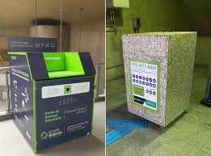

Soluções para o Descarte de Produtos Químicos
O descarte inadequado de produtos químicos é um problema sério que ameaça o meio ambiente e a saúde humana. No entanto, diversas soluções podem ser adotadas para minimizar os danos e criar uma cultura mais responsável. Abaixo, destacamos alternativas viáveis que podem ser aplicadas por cidadãos, empresas e governos.
Conscientização e Educação
A base de qualquer transformação sustentável é a informação. Campanhas educativas, palestras em escolas e universidades e ações em redes sociais são formas eficazes de conscientizar a população sobre os riscos dos produtos químicos e sobre como descartá-los corretamente. Quando as pessoas entendem o impacto de suas ações, elas passam a contribuir ativamente com o meio ambiente.
Alternativas Sustentáveis de Descarte
Existem métodos seguros para lidar com resíduos perigosos. A coleta seletiva é um deles, especialmente quando há separação de materiais contaminados com produtos químicos. Os Pontos de Entrega Voluntária (PEVs), por exemplo, são locais específicos onde o cidadão pode depositar materiais como pilhas, baterias, medicamentos vencidos, tintas e produtos de limpeza.
🔎 Curiosidade: segundo o Ministério do Meio Ambiente, menos de 5% dos resíduos químicos domésticos são descartados corretamente no Brasil.
✅ Soluções Recomendadas
- Implantação de PEVs em supermercados, farmácias e escolas.
- Incentivo à logística reversa, que responsabiliza fabricantes pelo retorno e tratamento dos resíduos.
- Criação de centros de tratamento e reciclagem de substâncias químicas.
- Fomento à produção limpa, com substituição de insumos perigosos.
- Investimento em fiscalização e aplicação de leis ambientais.
- Apoio a pesquisas científicas que buscam inovações sustentáveis.
📊 Tabela Comparativa: Métodos de Descarte
📷 Ponto de coleta de pilhas e baterias em supermercado.

Descrição: Foto de um recipiente próprio para descarte de resíduos químicos leves, como pilhas e eletrônicos pequenos. (Use imagens de bancos como Unsplash, Pexels ou Pixabay).